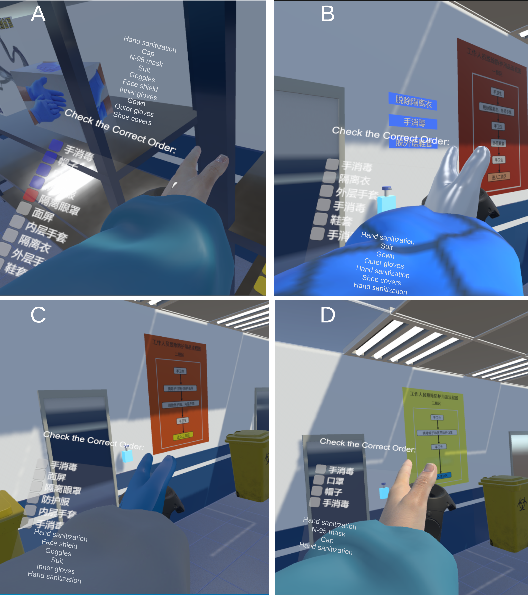

Personal Protection Equipment Training as a Virtual Reality Game in Immersive Environments: Development Study and Pilot Randomized Controlled Trial


Venue. JMIR Serious Games (2025)
Abstract. Background: Proper donning and doffing of personal protection equipment (PPE) and hand hygiene in the correct spatial context of a health facility is important for the prevention and control of nosocomial infections. On-site training is difficult due to the potential infectious risks and shortages of PPE, whereas video-based training lacks immersion which is vital for the familiarization of the environment. Virtual reality (VR) training can support the repeated practice of PPE donning and doffing in an immersive environment that simulates a realistic configuration of a health facility. Objective: This study aims to develop and evaluate a VR simulation focusing on the correct event order of PPE donning and doffing, that is, the item and hand hygiene order in the donning and doffing process but not the detailed steps of how to don and doff an item, in an immersive environment that replicates the spatial zoning of a hospital. The VR method should be generic and support customizable sequencing of PPE donning and doffing. Methods: An immersive VR PPE training tool was developed by computer scientists and medical experts. The effectiveness of the immersive VR method versus video-based learning was tested in a pilot study as a randomized controlled trial (N=32: VR group, n=16; video-based training, n=16) using questionnaires on spatial-aware event order memorization questions, usability, and task workload. Trajectories of participants in the immersive environment were also recorded for behavior analysis and potential improvements of the real environment of the health facility. Results: Comparable sequence memorization scores (VR mean 79.38, SD 12.90 vs video mean 74.38, SD 17.88; P=.37) as well as National Aeronautics and Space Administration Task Load Index scores (VR mean 42.9, SD 13.01 vs video mean 51.50, SD 20.44; P=.16) were observed. The VR group had an above-average usability in the System Usability Scale (mean 74.78>70.0) and was significantly better than the video group (VR mean 74.78, SD 13.58 vs video mean 57.73, SD 21.13; P=.009). The analysis and visualization of trajectories revealed a positive correlation between the length of trajectories and the completion time, but neither correlated to the accuracy of the memorization task. Further user feedback indicated a preference for the VR method over the video-based method. Limitations of and suggestions for improvements in the study were also identified. Conclusions: A new immersive VR PPE training method was developed and evaluated against the video-based training. Results of the pilot study indicate that the VR method provides training quality comparable to video-based training and is more usable. In addition, the immersive experience of realistic settings and the flexibility of training configurations make the VR method a promising alternative to video instructions.
Link to this page: